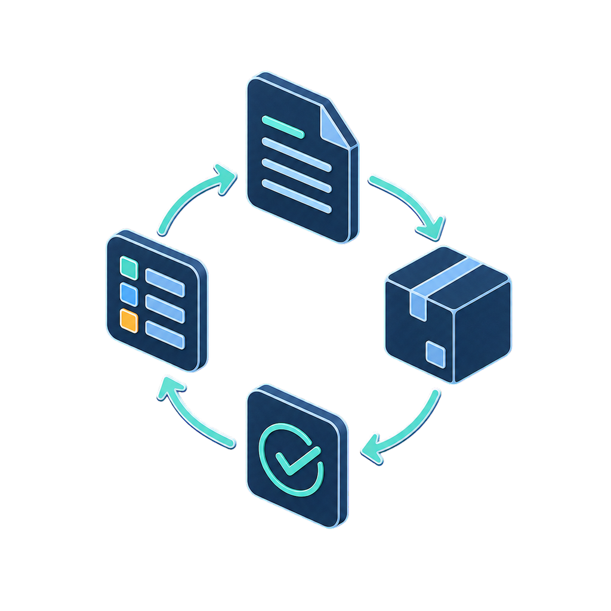
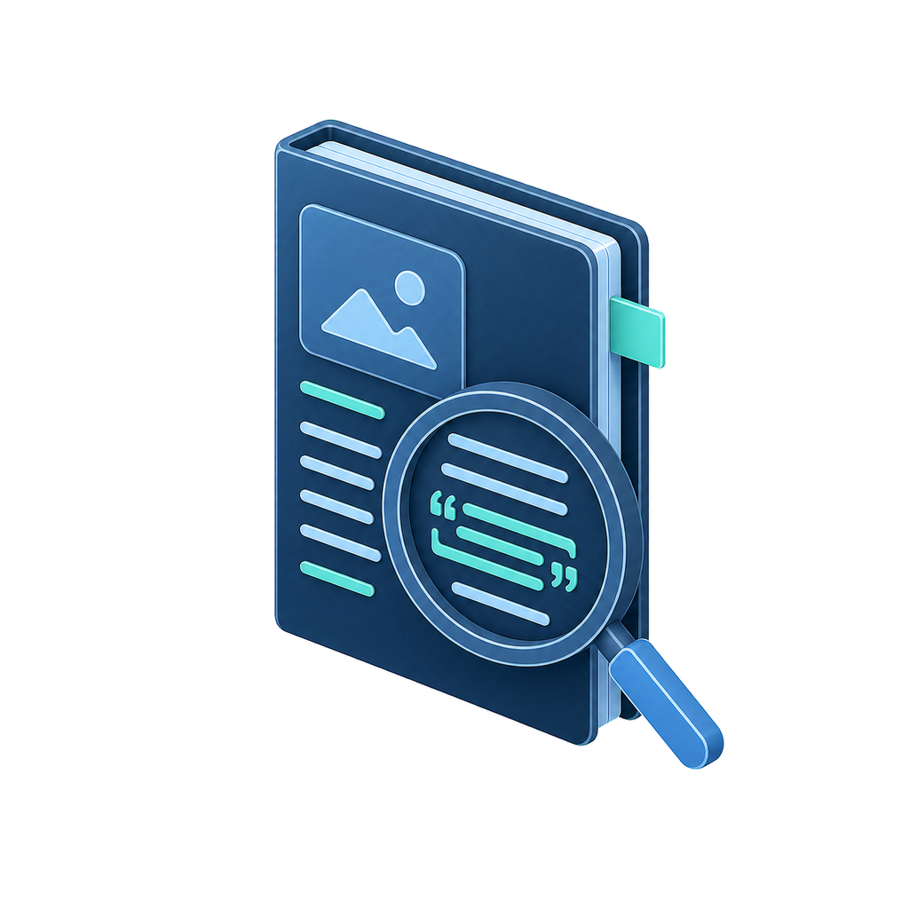
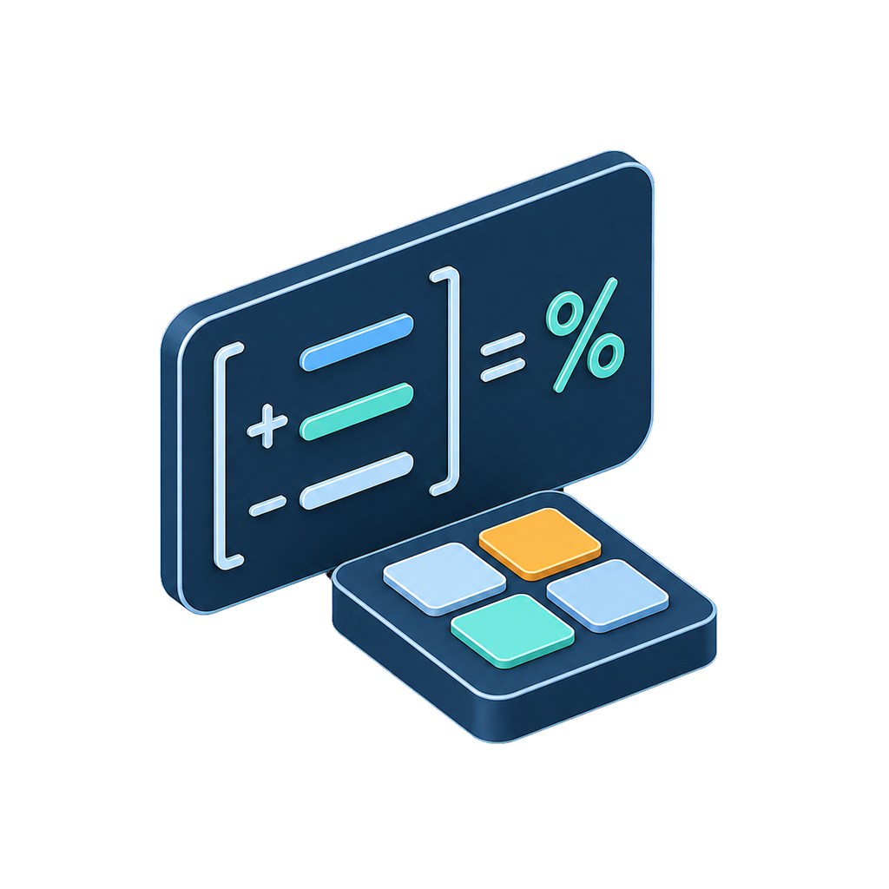
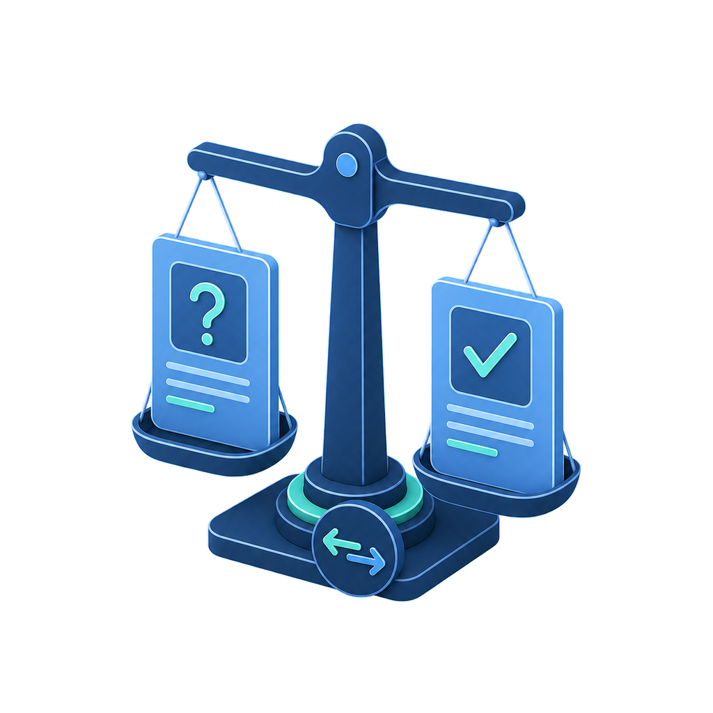

年度报告文件 · 日期 · 页码
样例已备
W2 · 计算可复算 · 来源可回指
面向事务所审计项目组
把分散的公开资料，变成可复核的审计前置线索。
审迹智链聚焦收入确认与销售收款循环，在承接、续聘和审计计划阶段，把异常信号连接到原文、计算、正常解释、资料缺口与下一步资料需求。
当前仅用公开资料形成待核查线索，不形成审计结论、舞弊认定或自动承接决定。
本页为本地静态版：无需 GPT / ChatGPT 登录，可直接双击打开。
T0 公开资料
审计报告意见 · 关键事项
待导入
同行资料口径 · 期间 · 来源
可选
R1 · 草稿
可复算
待核查事项结构
应收增长与收入增长的关系需进一步核查
资料依据0 / 4
正常解释待检索
下一步
导入年报字段，并核对账龄、期后回款与主要合同摘要。
第二周开发样例含 evidence_id 与页码回指；Codex 已完成技术交叉复核，团队人工确认前不写已复核定稿
来源定位
确定性计算
正常解释
引用硬校验
人工确认
产品价值 / VALUE
预审不是自动下结论，
而是更早提出好问题。
公开资料通常不能证明每笔交易是否真实。审迹智链把无法回答的问题转成明确的资料依据缺口，让项目组知道下一步要核什么、向客户索取什么。
01
从指标异常，走到销售循环节点
不止提示“应收增速较快”，还关联信用政策、结算周期、履约条件与期后回款。
02
每个判断都保留回指路径
来源、披露日期、页码、原文、单位与计算口径必须齐全；缺项只留在草稿区。
03
把资料不足变成可执行清单
账龄表、期后回款、主要合同摘要和大额销售明细，不再散落在分析笔记里。
验证方法 / METHOD
一条线索，需要四个维度相互约束。
多维触发只增加待核查的信息量，不自动提高风险等级；优先级仍交给审计人员判断。
01
财务
复算收入、应收、合同资产与现金流等确定性指标，保留公式与口径。
02

业务
把异常连接到合同、履约、收入确认、应收与回款等销售循环节点。
03
行业
仅在期间、产品与统计口径可比时，引入同行与公开行业资料进行对照。
04

披露
核对管理层文字解释与报表结果是否一致；解释不足时保留为资料缺口。
OUTPUT待核查事项有来源 · 有反证 · 有缺口
工作流程 / WORKFLOW
从文件到任务卡，
每一步都可复核。
首版优先跑通 R1 单规则最小链路；R3—R8 只有通过资料可得性和阶段验收后才进入原型。
- 01

资料预检
记录文件、披露日期、页码、单位与可读性；缺失项不由模型补齐。
- 02

确定性计算
程序复算多年度指标，让审计人员能够按相同口径再次核对。
- 03

交叉验证
首批聚焦 R1、R2，把财务信号连接到业务逻辑与公开解释。
- 04

反证挑战
强制寻找正常原因与反对资料；找不到时明确标记待补充。
- 05
人工确认
引用、公式和必填项通过后，才可进入待核查事项与资料清单。
交互原型 / PROTOTYPE
三步走完本周最小演示闭环。
当前版本可自动复算 R1 增长率，展示 evidence_id 与 PDF 页码，并拦截字段缺失、年份错位、除数为零与缺少来源编号。开发样例不是冻结案例；技术交叉复核已完成，团队人工确认与实验结论仍未完成。
STEP 01
尚未开始
新建预审项目
先确定分析对象、截止时点与使用场景。
可信边界 / TRUST
先把能证明的部分，
做得足够可靠。
项目已获准进入执行准备与最小原型阶段；规则、案例、实验配置与效果结论仍须逐项验证。
来源硬约束
原文、页码、披露日期或关键字段缺失时，只输出资料缺口或暂缓。
公式由程序复算
模型处理语义，数字与增长率由确定性程序计算并保留口径。
强制一次反证
正常解释没有可核验支持时，如实写明“待补充资料”，不补造原因。
最终保留给人
是否进入 Top 5、选择审计程序或形成审计结论，始终由审计人员决定。
CURRENT STATUS
当前进度：W2 / G1 规则—数据接口
已接入标准股份开发样例、R1 自动计算、evidence_id 回指与四类异常拦截；Codex 已完成年报逐页技术交叉复核，A 的专业定稿与团队人工确认仍待完成。
- W1
可解析骨架
- W2
计算与回指
- W3
最小闭环
- W4
双规则 MVP